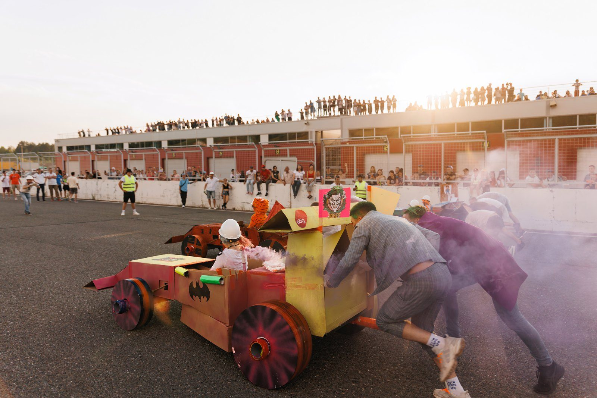
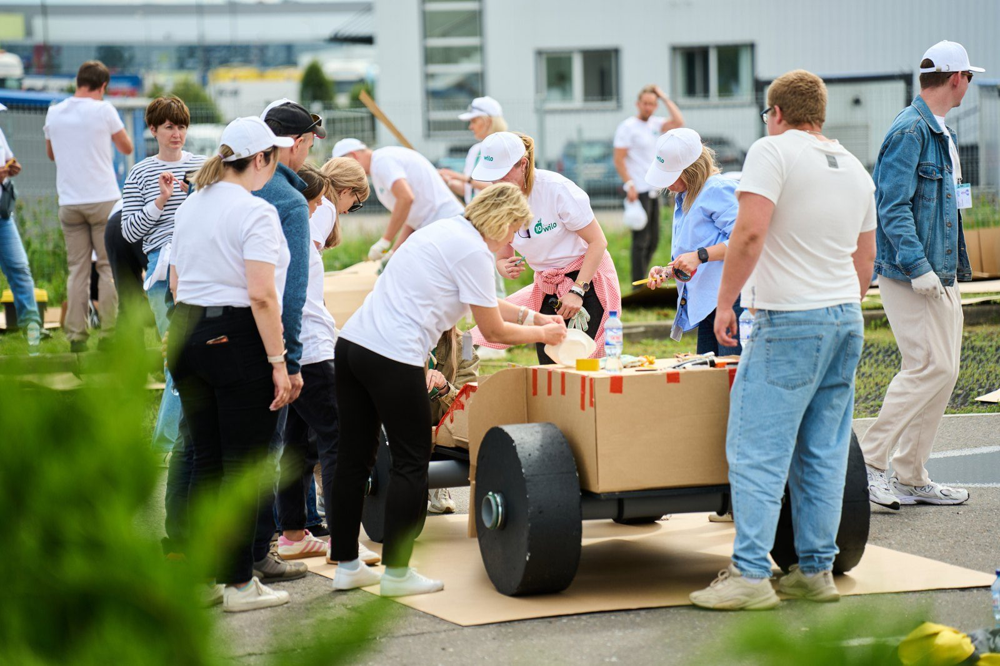
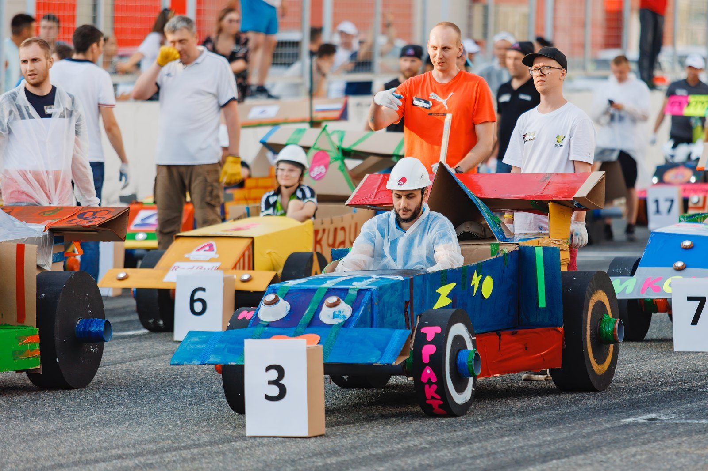
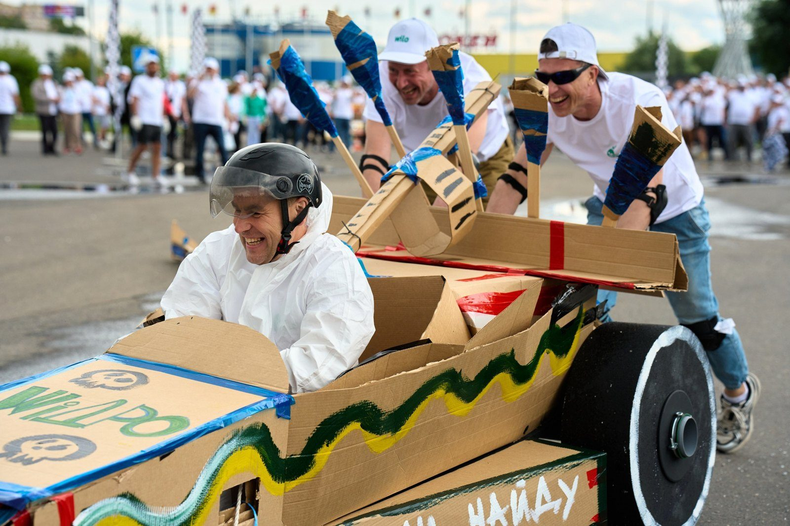
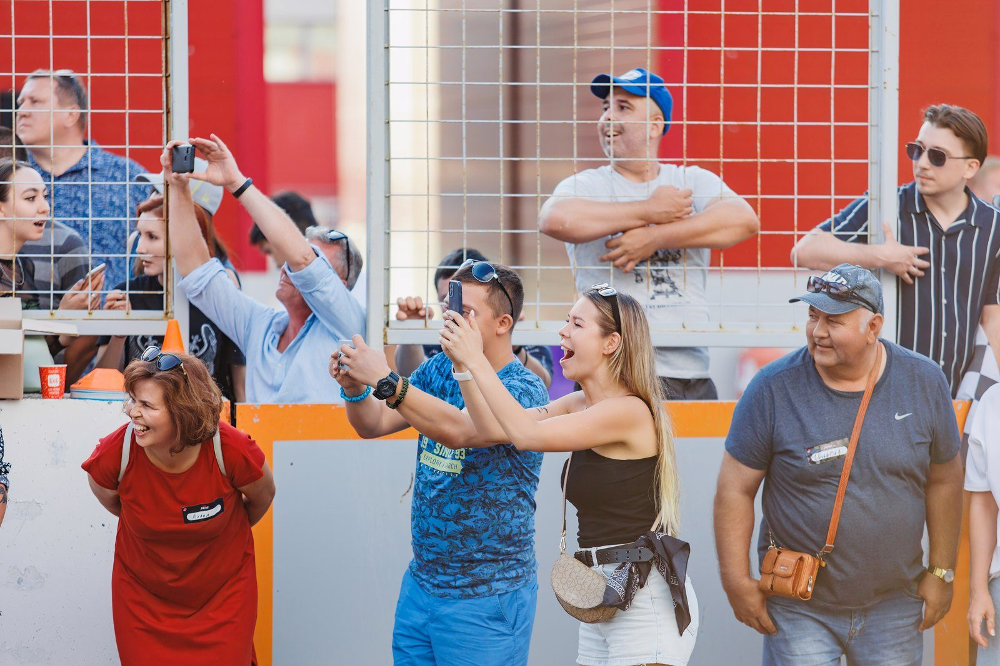
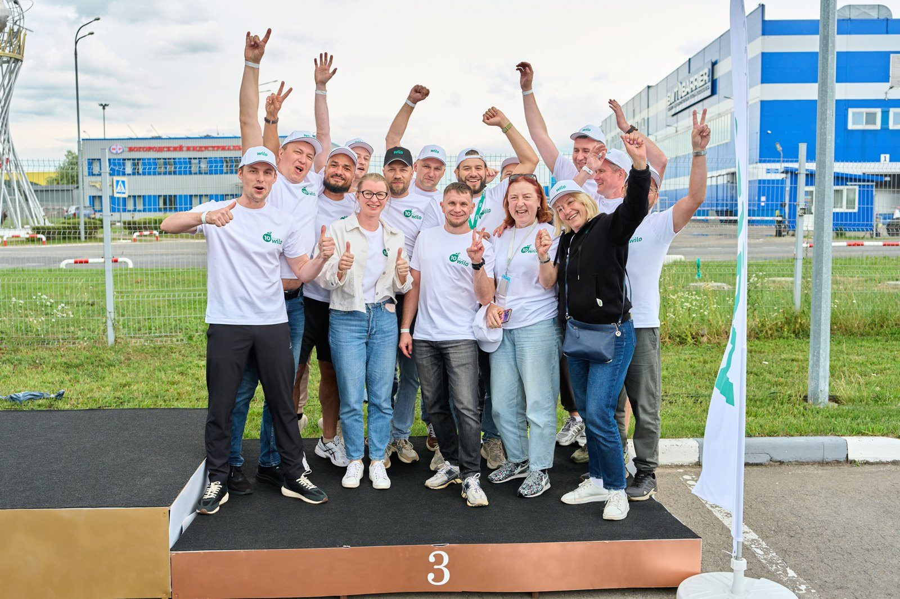
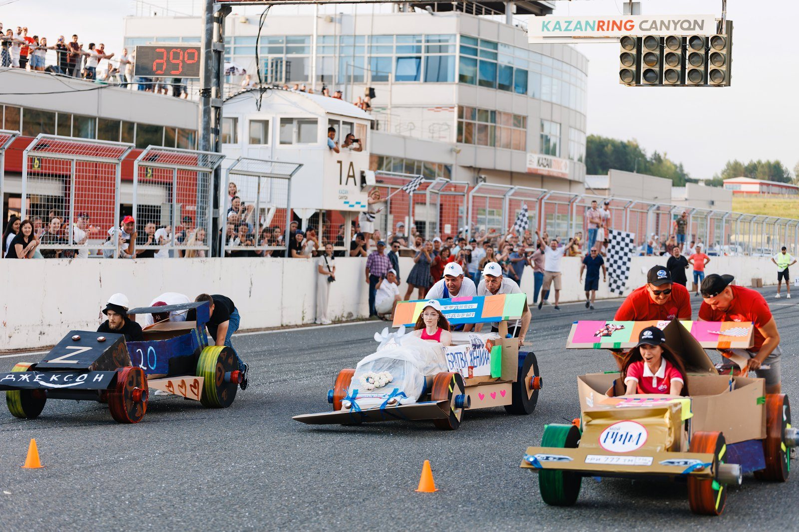
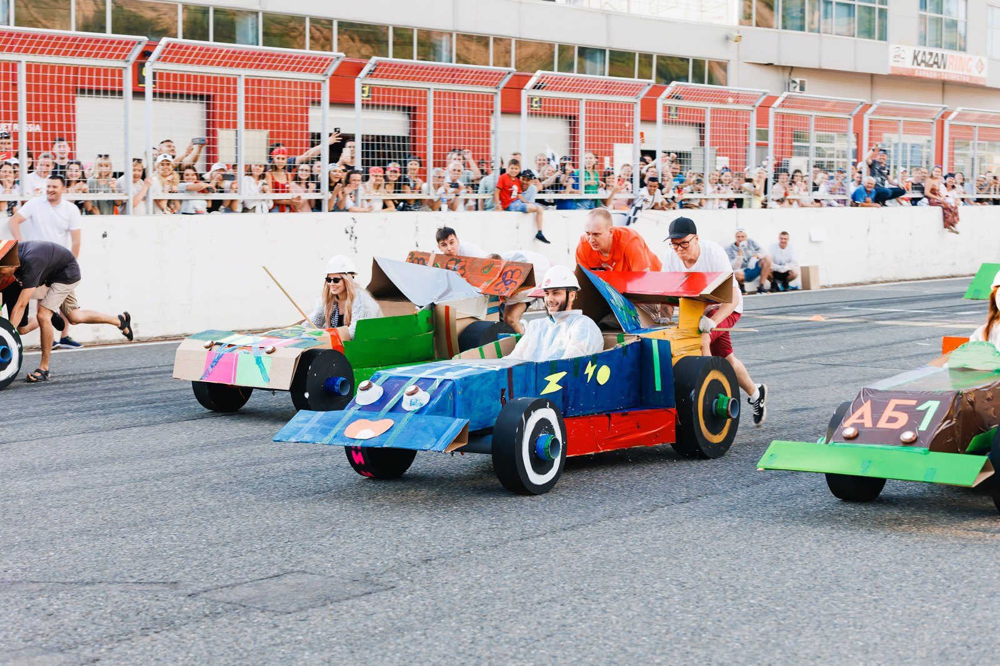
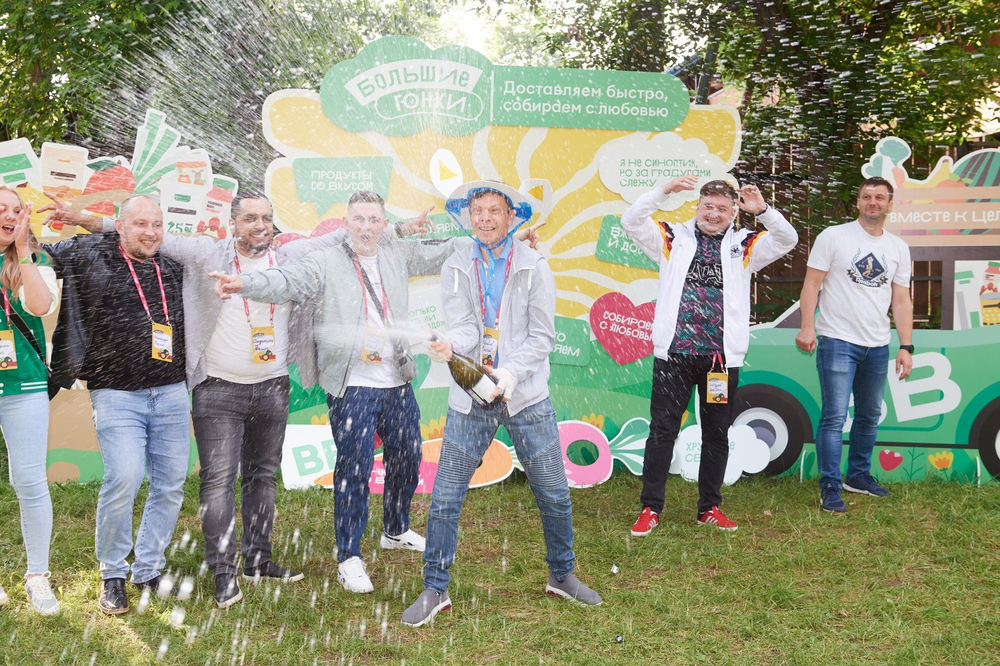

Коллеги собрали болид из картона и вышли на трассу: как устроены Гонки Формула 1

Пилот в каске садится в болид из картона. Двое коллег упираются руками в корпус и ждут отмашки. Вдоль трассы стоит вся остальная команда: кто-то с флагом, кто-то на пит-стопе, готовый чинить поломки.
Ещё два часа назад этого болида не было. Были чертежи, листы картона, деревянные оси и коллеги, которые утром ещё не знали, кто из них сядет за руль.
Так выглядит финал тимбилдинга «Гонки Формула 1». Рассказываем, как он устроен и зачем его заказывают компании.
Что это за формат
Команды по чертежам собирают из картона и деталей копии гоночных болидов. Потом раскрашивают их, проходят техосмотр у жюри и выходят на заезды на время.
Главное в цифрах:
- участники: от 60 до 300 человек;
- время: 2,5 часа активной программы;
- команды: собираются прямо на месте;
- итог: у каждой команды свой болид, заезды и награждение.
Ехать можно по асфальту, траве, песку и даже снегу: колёса у болидов прочные. Если программа проходит в зале, под трассу кладут защитное покрытие.

Как проходят 2,5 часа
Программа делится на пять этапов. Ниже по порядку, что происходит на каждом.
### Сборка
Команда получает чертежи, инструменты и комплект материалов. Сначала ставит колёса на деревянные оси. Потом собирает из картона корпус, коробку двигателя и кабину пилота, а сверху крышку двигателя со спойлерами.
Рядом всё время работают инструкторы и аниматоры. Если что-то не сходится с чертежом, подскажут.
### Дизайн
Болиду придумывают раскраску и название. Команда шьёт форму для пилота и одежду для группы поддержки, сочиняет речёвку.
На этом этапе проявляются люди, которых в офисе не видно: дизайнеры, шутники, авторы слоганов. Иногда это те, от кого коллеги такого не ждали.
### Техосмотр
Жюри смотрит на внешний вид, надёжность конструкции, ходовые качества и соответствие инструкции. От оценки зависит стартовый номер и место на трассе.
Здесь команда впервые видит цену аккуратной работы. Криво поставленная ось на сборке превращается в позицию в хвосте стартовой решётки.
### Заезды
Команды делятся на группы. Каждая группа проходит три технических круга на время. Пилот сидит в болиде, разгоняющие толкают, остальные болеют и чинят поломки на пит-стопе.
Победители групп встречаются в финальном заезде. Как это выглядит со стороны, проще один раз увидеть: в ролике ниже весь путь от сборки до старта.
### Финал
Чемпионы и призёры получают медали с гравировкой и открывают шампанское. Потом все фотографируются со своими машинами.

Кто кем становится в команде
За 2,5 часа в каждой команде само собой появляется маленькое производство. Роли никто не раздаёт заранее, люди договариваются сами:
- одни читают чертёж и планируют работу;
- другие собирают корпус и ставят колёса;
- третьи отвечают за раскраску, форму и речёвку;
- команда выбирает пилота и разгоняющих;
- кто-то берёт на себя пит-стоп и ремонт.
Для руководителя это возможность посмотреть на свою команду со стороны. Видно, кто берёт ответственность, кто держит план и кто первым бежит чинить отвалившееся колесо.

Что команда уносит с собой
Связь «моя часть влияет на общий итог». Болид едет, только если сработали все: ось, корпус, пилот, разгоняющие. Ошибка на сборке проявляется на трассе. Это понятно без слайдов.
Доверие. Пилот садится в машину, которую собрали коллеги, и едет на ней по трассе. Упражнение на доверие без неловкости тренинга.
Знакомство между отделами. Если смешать в командах людей из разных отделов, за пару часов они проходят путь «план, сборка, проверка, запуск». После этого им проще звонить друг другу по рабочим вопросам.
Фото и видео. Трибуна, флаги, финиш, шампанское. Эти кадры потом работают во внутренних рассылках и в HR-бренде компании.

Где проходят гонки
Площадку в Москве и Подмосковье помогаем подобрать бесплатно. Программа выезжает и в регионы: у нас были гонки на 400 человек на трассе в Казани и выезд с болидами в Сочи.
Вот короткий ролик с той самой трассы в Сочи, чтобы оценить масштаб.

Что входит в программу
Реквизит мы производим сами. В стоимость программы входит:
- детали для болидов, инструменты и материалы;
- браслеты участников и специальная одежда;
- оформление площадки и разметка трассы;
- оборудование для пит-стопов;
- ведущие из школы Каталист и инструкторы;
- монтаж, демонтаж и вывоз мусора.

Сколько стоит
Ориентир для команды из 100 гостей: от 3 500 до 7 300 ₽ с человека, в зависимости от наполнения. Чем больше команда, тем ниже цена на гостя. Минимальный заказ от 199 000 ₽.
Банкет и площадку считаем отдельно, если они нужны. Точную смету присылаем за 10 минут после короткого разговора.

Когда гонки подходят, а когда нет
Формат хорошо ложится на такие случаи:
- летний корпоратив или выезд на природу;
- зимний тимбилдинг, в том числе на снегу;
- день рождения компании, где нужен общий яркий момент;
- запуск новой команды или объединение отделов.
Программа рассчитана на группы от 60 человек. Для небольших команд в каталоге есть другие форматы.
Если у встречи есть стратегическая часть, гонки удобно ставить после обеда. Утром работа головой на сессии, днём общий азарт на трассе.

Коротко о нас
Каталист проводит тимбилдинги с 2010 года. За это время мы сделали 4 800 проектов, получили 16 наград ивент-индустрии и собрали каталог из 50+ авторских программ. «Гонки Формула 1» входят в число программ, которые клиенты заказывают чаще всего.
Если хотите посмотреть фото с заездов, программу по шагам и задать вопрос менеджеру, вот страница программы «Гонки Формула 1».
тимбилдингкорпоративкомандообразованиеHRивент